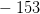
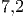
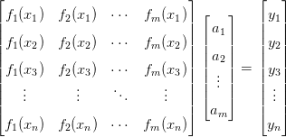

pontos, desejamos encontrar o polinômio de
grau
pontos, desejamos encontrar o polinômio de
grau  que melhor se ajusta a esses pontos de tal forma a minimizar o
resíduo, ou seja, encontrar a curva
que melhor se ajusta a esses pontos de tal forma a minimizar o
resíduo, ou seja, encontrar a curva  tal que
tal que
Dado um conjunto de pontos, desejamos encontrar o polinômio de
grau que melhor se ajusta a esses pontos de tal forma a minimizar o
resíduo, ou seja, encontrar a curva tal que
 Ajuste linear geral
Ajuste linear geral
O problem geral de ajuste linear consiste em dada uma família
 de
de  funções e
funções e  um conjunto
de
um conjunto
de  pontos, calcular coeficientes
pontos, calcular coeficientes  tais que a função dada
por
tais que a função dada
por

![n
R = ∑ [f (x ) - y ]2 .
i=1 i i](main3133x.png)
 .
.
Com o objetivo de tornar a desenvolvimento mais claro, vamos escrever  como a soma dos resíduos individuais:
como a soma dos resíduos individuais:
![∑n
R = Ri, onde Ri [f(xi) - yi]2.
i=1
>>>>>>> 62bea6a0d0a1d3eca740d93a452697554da972de](main3136x.png)
Do fato que  , temos que cada resíduo pode ser escrito
como
, temos que cada resíduo pode ser escrito
como

A fim de encontrar o ponto de mínimo, resolvemos o sistema oriundo de
igualar a zero cada uma das derivadas parciais de  em relação aos m
coeficientes
em relação aos m
coeficientes  e aplicamos a regra da cadeia
e aplicamos a regra da cadeia

 , onde a matriz
, onde a matriz  é dada por:
é dada por: 
 e
e  , por:
, por: 
 e
e  , onde a matriz
, onde a matriz  é dada
por:
é dada
por:

 , por:
, por:

O problema de ajuste, agora, se reduz a resolver o sistema linear  , ou
. Este sistema linear tem solução única se a matriz for inversível.
O teorema a seguir mostra que isto acontece sempre a matriz possui posto
, ou seja, o número de linhas linearmente independentes for igual ao número de
colunas.1
, ou
. Este sistema linear tem solução única se a matriz for inversível.
O teorema a seguir mostra que isto acontece sempre a matriz possui posto
, ou seja, o número de linhas linearmente independentes for igual ao número de
colunas.1
Teorema 7.2.1. A matriz  é quadrada de ordem
é quadrada de ordem  e é
inversível sempre que o posto da matriz é igual a número de colunas .
e é
inversível sempre que o posto da matriz é igual a número de colunas .
Demonstração. Para provar que  é inversível, precisamos mostrar que
se
é inversível, precisamos mostrar que
se  é um vetor de ordem
é um vetor de ordem  e
e  , então
, então  . Suponha, então,
que
. Suponha, então,
que  , isto é,
, isto é,  . Tomando o produto interno da expressão
. Tomando o produto interno da expressão
 com
com  , temos:
, temos:
Na forma matricial obtemos
|
| (7.3) |
Na forma matricial temos ======= src="main3172x.png" alt=" ⟨ T ⟩ 2 0 = V V v,v = ⟨V v,V v⟩ = ∥V v∥ " class="math-display" >
 implica obrigatoriamente
implica obrigatoriamente  . Como o posto de
. Como o posto de  é igual ao número de colunas,
é igual ao número de colunas,  precisar ser o vetor nulo. __
precisar ser o vetor nulo. __
Observação 7.2.1. Este problema é equivalente a resolver pelo métodos dos mínimos quadrados o seguinte sistema linear:

Exemplo 7.2.1. Usando esta técnica geral, encontre a reta que melhor aproxima o seguinte conjunto de dados:
 |  |
 |  |
 |  |
 |  |
 |  |
 |  |
Solução. Desejamos encontrar os valores de  e
e  tais que a função
tais que a função
 melhor se ajusta aos pontos da tabela. Afim de usar o critério
dos mínimos quadrados, escrevemos o problema na forma matricial dada
por:
melhor se ajusta aos pontos da tabela. Afim de usar o critério
dos mínimos quadrados, escrevemos o problema na forma matricial dada
por:

Multiplicamos agora ambos os lados pela transposta: >>>>>>> 62bea6a0d0a1d3eca740d93a452697554da972de
 |
o que fornece:


A solução desse sistema é  e
e  .
.
A tabela abaixo mostra os valores dados e os valores ajustados:
 |  |  |  |
 |  |  |  |
 |  |  |  |
 |  |  |  |
 |  |  |  |
 |  |  |  |

Exemplo 7.2.2. Encontre a função  que
melhor se ajusta pelo critérios dos mínimos quadrados aos seguintes pontos
dados:
que
melhor se ajusta pelo critérios dos mínimos quadrados aos seguintes pontos
dados:
 |  |
|  | |
|  | |
|  |  |
 |  |
 |  |
Solução. Começamos definindo a matriz  e o vetor
e o vetor  :
:


 e
e  :
:

Finalmente o vetor de coeficientes,  , é dado pela solução do sistema
, é dado pela solução do sistema
 :
:

 procurada é dado por:
procurada é dado por:

 |  |  |  |
| 0 | -153 | - 161,18783 | -8,1878306 |
| 0,25 | 64 | 58,582912 | -5,4170876 |
| 0,5 | 242 | 244,03658 | 2,0365799 |
| 0,75 | 284 | 286,53693 | 2,5369286 |
| 1 | 175 | 161,18783 | -13,812169 |